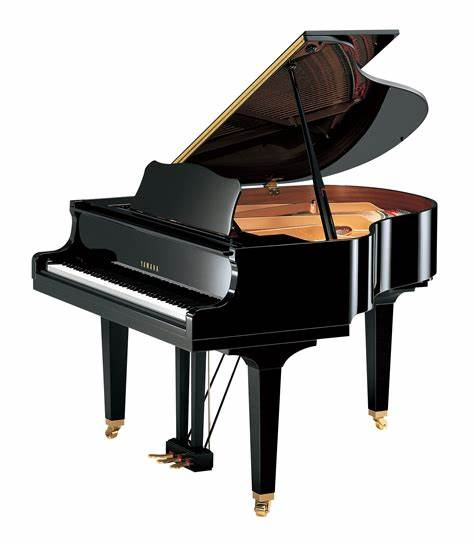
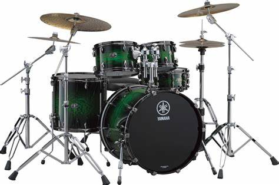

My name is Christopher Barbieri. I am 24 years old. I go to Beacon College and currently taking Introduction to Robotics with Ms Rameirez. In the Spring of 2024 Semster, we were working on programming the Tacobot to move, detect objects and utlize sound. The detection of objects is based on both color and distance.
My name is Christopher Barbieri. I was born February 23, 2000. I attend Beacon College in Leesburg, Florida. I've been going there since March of 2021. I like music. I play the piano and drums. I also work at McDonald's in Winter Springs. I live in Winter Springs, Florida. I am currently studying to get my CIS major Computer Information Systems and a minor in Video Game Design. The courses I have taken that are related to my major are Introduction to Web Design, Visual Communications, and Intro to Computers. Here is my Course Page for this semster.
 